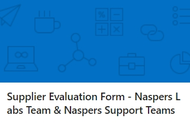

Skills and Abilities
QA Software Testing
As a Quality Assurance (QA) Software Tester, I am dedicated to ensuring the highest standards of software quality through rigorous testing and meticulous attention to detail. My role involves developing and executing comprehensive test plans and test cases to identify and document defects, ensuring that the software meets functional and performance requirements. I leverage a range of testing methodologies, including manual and automated testing, to thoroughly assess applications and identify areas for improvement. Utilizing tools such as Selenium, JIRA, and TestRail, I work collaboratively with development teams to address issues, validate fixes, and ensure seamless software functionality. My expertise extends to creating and maintaining test scripts, performing regression testing, and providing detailed reports on test outcomes and defect statuses. Committed to delivering reliable and high-quality software, I continuously seek to enhance testing processes and contribute to successful project outcomes.
Data Quality Analyst
As a Data Quality Analyst, I am responsible for ensuring the accuracy, consistency, and reliability of data across an organization. My role involves designing and implementing data quality frameworks and processes to monitor and improve data integrity. I analyze data from various sources to identify and address discrepancies, errors, and inconsistencies, employing a range of data validation techniques and tools. By conducting data profiling, cleansing, and enrichment, I ensure that data is accurate and fit for its intended purpose. I work closely with stakeholders to understand their data requirements and establish data quality metrics and standards. Additionally, I develop and maintain data quality dashboards and reports to track performance and provide actionable insights for continuous improvement. My expertise extends to creating data quality rules and managing data correction processes, all aimed at enhancing decision-making and ensuring reliable data-driven outcomes for the organization.
Penetration Testing
As a Penetration Tester, also known as an ethical hacker, I specialize in identifying and addressing security vulnerabilities within systems, networks, and applications through simulated attacks. My role involves conducting thorough assessments to uncover potential weaknesses that could be exploited by malicious actors. Utilizing a variety of tools and techniques, including network scanning, vulnerability assessment, and exploit development, I mimic real-world attack scenarios to evaluate the effectiveness of security controls and defenses. I meticulously document findings, providing detailed reports that outline identified vulnerabilities, their potential impact, and actionable recommendations for remediation. My approach combines technical expertise with a deep understanding of cybersecurity threats and best practices to help organizations enhance their security posture and protect sensitive data. By staying abreast of emerging threats and trends, I ensure that my testing methodologies remain current and effective, contributing to the overall resilience and security of the systems I assess.
IT Technical Support
As an IT Technical Support Specialist, I am dedicated to providing comprehensive technical assistance and troubleshooting to ensure the smooth operation of an organization’s IT infrastructure. My role involves responding to and resolving a wide range of technical issues, including hardware and software problems, network connectivity issues, and system errors. I deliver prompt and effective support through various channels, including phone, email, and remote desktop tools. My responsibilities include diagnosing technical issues, performing root cause analysis, and implementing solutions to restore functionality. I also assist with the installation, configuration, and maintenance of IT equipment and software, ensuring that all systems are up-to-date and secure. Additionally, I document and track support requests, create knowledge base articles, and contribute to the development of IT support procedures and best practices. By working closely with end-users and IT teams, I help maintain operational efficiency and contribute to a positive user experience within the organization.
Here are some of the projects I have worked on:
- - Data Quality Analyst, responsible for ensuring the accuracy, consistency, and reliability of data across an organization.
-
 - Quality Assurance Software Testing - create automation testing using Selenium.
- Quality Assurance Software Testing - create automation testing using Selenium.
-  Click for More - Survey for Internal Team.
-
.jpeg) Click for More - Survey for Implementing Partners.
Click for More - Survey for Implementing Partners.
-
 Click to view my Projects in Excel - All of my Projects.
Click to view my Projects in Excel - All of my Projects.

Contact Me
Phone: +27 (0)61 444 8336
Alt Phone: +27 (0)62 357 3030
Email: nhlakaniphomlangeni1@gmail.com